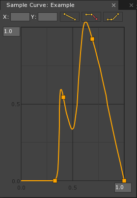

SampleCurve
The SampleCurve editor is Zero’s tool for creating custom curves that can be used with any value that can be normalized, such as the Ease parameter in Actions. Just as eases can be represented on a graph as a function of a change of one value given another, the same applies to the curves created with the SampleCurve editor.
Common Uses
- Creating a custom curve that can be used in place of the
Easeparameter in an Action. - Visually representing a range of outputs for a range of inputs.
Using a SampleCurve
Creating a SampleCurve
A new SampleCurve can be added by using the Add command “Command : Add“” or clicking on the Add button, followed by selecting SampleCurve. By default, the initial curve shows a linear progression. To begin manipulating the curve, an anchor point will need to be added by double-clicking on the curve where the anchor point is desired. It can then be grabbed by holding down the left mouse button on top of the point, and moved around the graph, as is demonstrated below:

If more anchor points are needed on the curve, simply double-click again on the curve at the next desired edit point. A virtually unlimited number of anchor points can be added, but eventually the curve will fill up to the point where effective edits are no longer possible.
Editing a SampleCurve
Once an anchor point has been created, the tangents of that point can be manipulated using one of four options: Linear Tangents, Weighted Linear Tangents, Split Tangents, and Weighted Split Tangents. All four are demonstrated below:
Linear Tangents

Weighted Linear Tangents

Split Tangents

Weighted Split Tangents

Note
While Linear and Weighted Linear Tangents are mutually exclusive and selecting one will deselect the other, Split Tangents act as a toggle and can be used alongside either Linear or Weighted Linear Tangents.
Applying the SampleCurve
In the abstract a SampleCurve is a visual representation of a change over time or any other range. Once a SampleCurve has been created and edited to the desired result, it can then be used to effect changes in various Component properties such as position, color, light intensity, etc. The upcoming examples of using SampleCurves will be using the same Curve:

Using Actions
A SampleCurve can be used in place of the Ease parameter of an Action and alters the manner in which the value changes between its starting and ending values. The vertical axis of the SampleCurve represents a normalized value of the property being changed, with 0 representing the starting value and 1 representing the desired ending value.
[Property]
// The SampleCurve to be used
var Curve : SampleCurve;
function Initialize(init : CogInitializer)
{
// The property to be changed; in this case the object's translation
var propertyToChange = @this.Owner.Transform.Translation;
// The final location to move it to
var locationToMoveTo = Real3(0,5,0);
// How long it takes to move
var timeToTake = 5.0;
// Assigning the action to the object
Action.Property(this.Owner.Actions,
propertyToChange,
locationToMoveTo,
timeToTake,
this.Curve);
}
This code will move an object from (0,0,0) to (0,5,0) over a period of 5 seconds, with the SampleCurve determining the path of the object. The shape of the SampleCurve will dictate where along the path the object should be, with 1 on the vertical axis representing the end value (in this case (0,5,0)) and 1 on the horizontal axis representing the total time (5 seconds). Since the SampleCurve being used ends at 0 on the vertical axis, the cube will move back to its starting position at the end of the curve before snapping to the desired location.
While the maximum value of both axes can be modified, using a SampleCurve in an action will still always use 1 from both axes as representing the ending values. Therefore moving past 1 along the vertical axis will change the property beyond what the final result will be; in this case the object moves past its final location, as it is having its Translation modified. Likewise if the horizontal maximum is changed: if it is set to a value lower than 1 then it will finish moving in the manner the SampleCurve dictates early then wait until the total time has passed before moving to its final position, and if it is set higher than 1 it simply will not finish the entirety of the curve.
Sampling from the SampleCurve
SampleCurve has access to a function, Sample, that returns the value of the curve at a given point. It takes one argument of type Real, which represents an input value on the horizontal axis, and returns an output of type Real, representing the value of the vertical axis at that point.
The return value is scaled by the Y maximum as defined in the curve editor. If the input value is less that the X value of the curve’s first anchor point (usually 0.0), or greater than the X value of the curve’s final anchor point (usually the X maximum as defined in the curve editor), then the value will clamp to the Y value of that anchor point.
class LightExample : ZilchComponent
{
[Dependency]
// Make sure the object has a Light component
var Light : Light;
[Property]
// The SampleCurve to be used
var Curve : SampleCurve;
[Property]
// A variable to give the object a limited lifetime
var LightTimeEnd : Real;
// A timer to track how long the object has existed.
var LightTimer : Real = 0;
function Initialize(init : CogInitializer)
{
Zero.Connect(this.Space, Events.LogicUpdate, this.OnLogicUpdate);
}
function OnLogicUpdate(event : UpdateEvent)
{
// Increment the LightTimer variable
this.LightTimer += event.Dt;
// Increase the intensity of the Light using the values taken from the SampleCurve
this.Light.Intensity = this.Curve.Sample(this.LightTimer);
// Destroys self once the total lifetime of the object reaches the preset time limit
if (this.LightTimer > this.LightTimeEnd)
this.Owner.Destroy();
}
}
By adding this component to an archetype, it can then be created at runtime to create a sudden burst of light that will destroy itself after it flashes.
Since using SampleCurve.Sample() uses the full values of both axes, if they are changed then it will affect the light’s behavior. By changing the vertical axis to 5 and the horizontal axis to 2 it’s possible to both extend its lifetime and make it brighter easily.